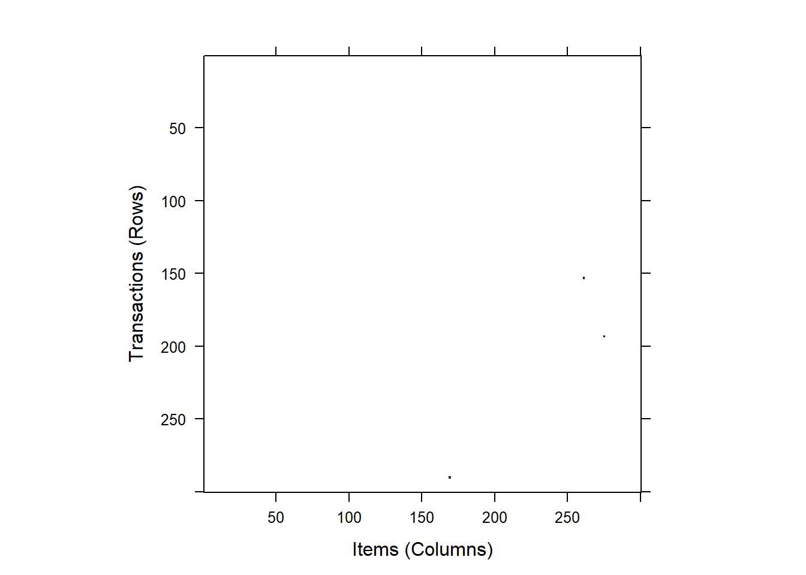
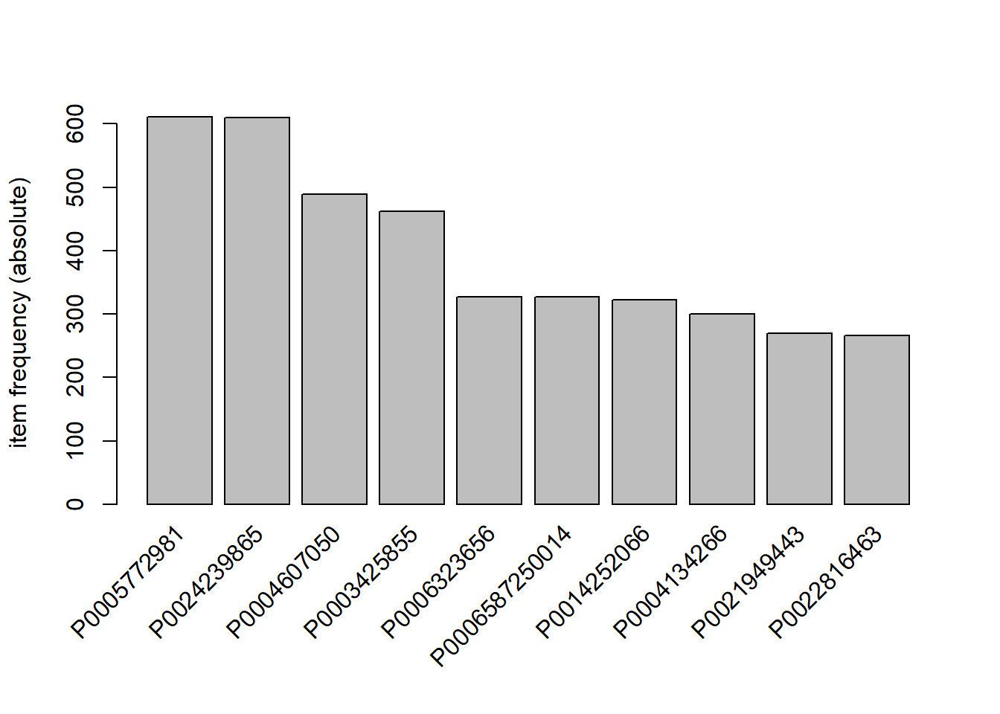
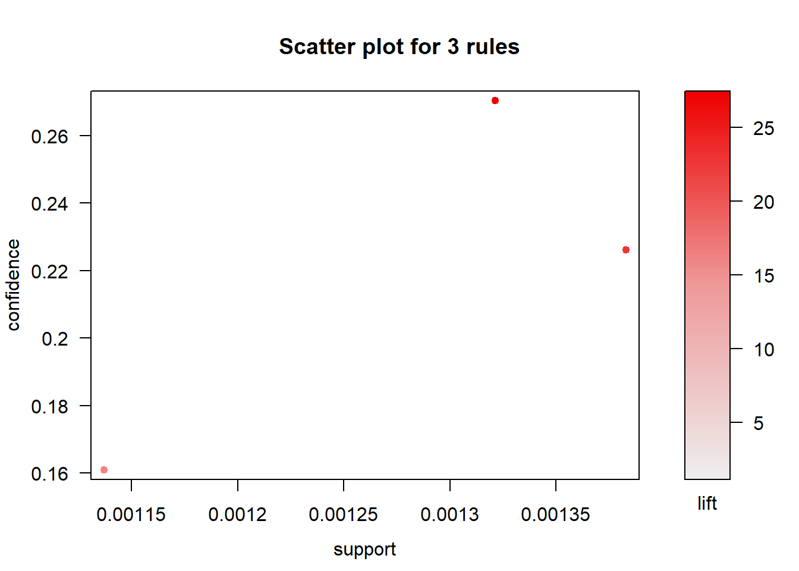
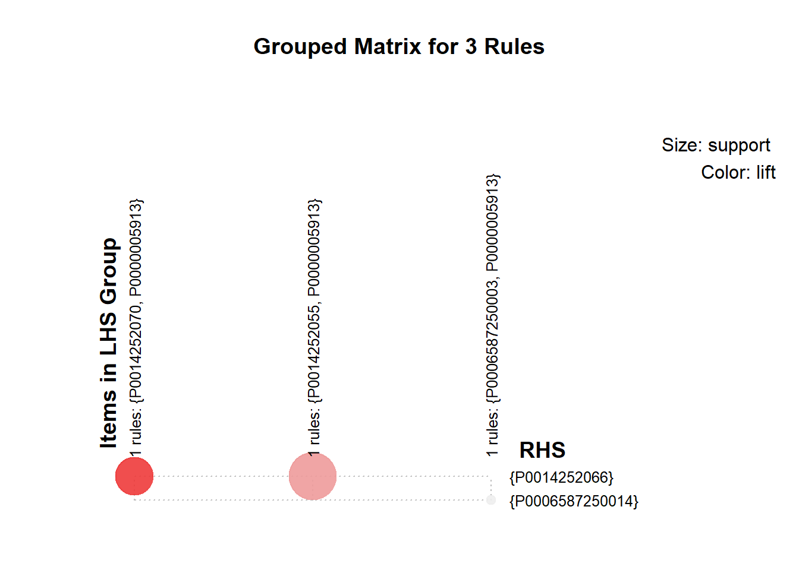
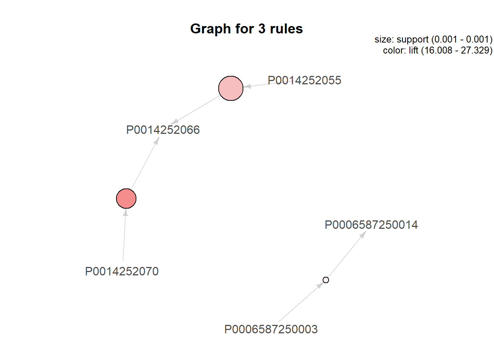

R规则和模式挖掘
Boylad · 2018-11-01
本节中我们会介绍创建和观察事务数据集，使用Apriori算法执行关联分析，使用多种图形模式可视化关联关系，以及使用Eclat算法找出频繁项集。最后，我们会使用时序信息创建事务，并使用cSPADE算法发现频繁序列模式。
把数据转换会事务
使用任何规则挖掘算法之前，我们需要把数据框格式的数据转换为事务。本例中，我们会展示如何使用arules程序包把购买订单数据集转换为事务(挖掘频繁项集或关联规则之前，要准备事务类型的数据集，然后转换为事务)。首先加载arules程序包：
library(arules)
## Warning: 程辑包'arules'是用R版本4.0.3 来建造的
## 载入需要的程辑包：Matrix
##
## 载入程辑包：'arules'
## The following objects are masked from 'package:base':
##
## abbreviate, write使用函数load给R进程加载用户的购买订单数据：
setwd("c:/Users/Boylad/Documents/mydata/R_for_Data_Science_Cookbook")
load("product_by_user.RData")最后，使用函数as，把data.table(或者data.frame)转换为事务(生成32539个事务和20054个项)：
trans <- as(product_by_user$Product, "transactions")
trans
## transactions in sparse format with
## 32539 transactions (rows) and
## 20054 items (columns)除了把data.table(或者data.frame)类型转换为事务，我们还可以使用下列步骤，把一个列或者矩阵类型转换为事务。使用包含购买记录的3个向量生成一个列：
tr_list <- list(c("Apple", "Bread", "Cake"),
c("Apple", "Bread", "Milk"),
c("Bread", "Cake", "Milk"))
names(tr_list) = paste("Tr", c(1:3), sep = "")然后，使用函数as把数据框转换为事务：
trans2 <- as(tr_list, "transactions")
trans2
## transactions in sparse format with
## 3 transactions (rows) and
## 4 items (columns)也可以把矩阵格式的数据转换为事务：
tr_matrix <- matrix(c(1,1,1,0,1,1,0,1,0,1,1,1), ncol = 4)
dimnames(tr_matrix) <- list(paste("Tr", c(1:3), sep = ""))
trans3 <- as(tr_matrix, "transactions")
trans3
## transactions in sparse format with
## 3 transactions (rows) and
## 4 items (columns)展示事务和关联
arules程序包使用transactions类存储事物数据。因此，我们必须使用arules提供的原生函数来展示事务和关联规则。首先，获取事务的LIST表示：
head(LIST(trans), 3)
## $`00001`
## [1] "P0014520085"
##
## $`00002`
## [1] "P0018800250"
##
## $`00003`
## [1] "P0003926850034" "P0013344760004" "P0013834251" "P0014251480003"然后，使用函数summary给出汇总统计信息和细节信息(例如：基本描述、最频繁项、事务长度分布)：
summary(trans)
## transactions as itemMatrix in sparse format with
## 32539 rows (elements/itemsets/transactions) and
## 20054 columns (items) and a density of 7.720787e-05
##
## most frequent items:
## P0005772981 P0024239865 P0004607050 P0003425855 P0006323656 (Other)
## 611 610 489 462 327 47882
##
## element (itemset/transaction) length distribution:
## sizes
## 1 2 3 4 5 6 7 8 9 10 11 12 13
## 23822 5283 1668 707 355 221 132 88 62 49 29 20 23
## 14 15 16 17 18 19 20 21 22 23 24 27 29
## 19 9 8 7 6 1 6 5 3 3 2 4 1
## 30 32 35 44
## 2 1 2 1
##
## Min. 1st Qu. Median Mean 3rd Qu. Max.
## 1.000 1.000 1.000 1.548 2.000 44.000
##
## includes extended item information - examples:
## labels
## 1 P0000005913
## 2 P0000006020
## 3 P0000006591
##
## includes extended transaction information - examples:
## transactionID
## 1 00001
## 2 00002
## 3 00003然后，我们可以使用函数inspect展示事务：
inspect(trans[1:3])
## items transactionID
## [1] {P0014520085} 00001
## [2] {P0018800250} 00002
## [3] {P0003926850034,
## P0013344760004,
## P0013834251,
## P0014251480003} 00003另外，我们也可以根据大小过滤事务：
filter_trans <- trans[size(trans) >= 3]
inspect(filter_trans[1:3])
## items transactionID
## [1] {P0003926850034,
## P0013344760004,
## P0013834251,
## P0014251480003} 00003
## [2] {P0018474750044,
## P0023729451,
## P0024077600013,
## P0024236730} 00005
## [3] {P0003169854,
## P0008070856,
## P0020005801,
## P0024629850} 00007我们也可以使用函数image图形化的观察事务：
image(trans[1:300, 1:300])
要图形化展示频度/支持度条形图，使用itemFrequencyPlot：
itemFrequencyPlot(trans, topN = 10, type = "absolute")
使用Apriori规则挖掘关联关系
关联挖掘的目的是从事务数据集中发现项之间的关系。关联挖掘的典型过程是找到支持度大于最小支持度的项集。然后，算法使用频繁项集生成置信度大于最小置信度的强规则(例如，牛奶=>面包，买牛奶的客户很肯能会买面包。)根据定义，关联规则使用X=>Y的形式表示，其中X和Y是不相连的项集。我们可以使用两个指标度量关联强度：支持度和置信度。支持度给出了一条规则在数据集中可用的百分比，置信度给出了X和Y出现在同一次事务中的概率：
\[Support=\frac{\sigma(X\bigcup Y)}{N}\]
\[Confidence=\frac{\sigma(X\bigcup Y)}{\sigma(X)}\]
其中，\(\sigma\)表示特定频繁项集的频度，N表示全量数据集。
因为支持度和置信度只是对规则强度的度量，我们依然会获取到许多额外的拥有高支持度和高置信度的过则。所以，我们可以使用第三种度量——提升度——来评估规则的质量(顺序)。根据定义，提升度代表规则大于X和Y随机共同出现的强度。我们可以用如下形式的提升度：
\[Lift=\frac{\sigma(X\bigcup Y)}{\sigma(X)\times\sigma(Y)}\]
Apriori是著名的挖掘关联关系的算法。它执行逐层的、宽度优先算法来给预备选项计数，Apriori算法流程首先首先逐层找出频繁项集(拥有最小支持度的项的集合)。例如，算法首先找出频度为1的项集，然后使用这些项集找出频度为2的项集。整个流程可以迭代地从频繁度为k的项集中找出新的频度为k+1的项集，直到没有频繁项集。最后，算法使用频繁项集生成关联规则。
关联挖掘是一项发现隐藏在事物数据集中有意义上关系的技术。这项技术首先找到所有频繁项集，并从频繁项集中生成强关联规则。使用，Apriori发现支持度大于0.001、置信度大于0.1的规则(从汇总信息中可以看到，Apriori生成6条规则，而且，我们可以看到规则长度的分布、质量度量的汇总信息、挖掘信息。在质量度量的汇总信息中我们可以找到关于3个度量度，支持度、置信度和提升度的描述性统计。支持度是包含某个项集的事务占比；置信度是规则的正确百分比；提升度是目标关联规则响应除以平均响应时间。)：
rules <- apriori(trans, parameter = list(supp = 0.001, conf = 0.1,
target = "rules"))
## Apriori
##
## Parameter specification:
## confidence minval smax arem aval originalSupport maxtime support minlen
## 0.1 0.1 1 none FALSE TRUE 5 0.001 1
## maxlen target ext
## 10 rules TRUE
##
## Algorithmic control:
## filter tree heap memopt load sort verbose
## 0.1 TRUE TRUE FALSE TRUE 2 TRUE
##
## Absolute minimum support count: 32
##
## set item appearances ...[0 item(s)] done [0.00s].
## set transactions ...[20054 item(s), 32539 transaction(s)] done [0.03s].
## sorting and recoding items ... [143 item(s)] done [0.00s].
## creating transaction tree ... done [0.00s].
## checking subsets of size 1 2 done [0.00s].
## writing ... [6 rule(s)] done [0.00s].
## creating S4 object ... done [0.00s].
summary(rules)
## set of 6 rules
##
## rule length distribution (lhs + rhs):sizes
## 2
## 6
##
## Min. 1st Qu. Median Mean 3rd Qu. Max.
## 2 2 2 2 2 2
##
## summary of quality measures:
## support confidence coverage lift
## Min. :0.001137 Min. :0.1131 Min. :0.004886 Min. :16.01
## 1st Qu.:0.001183 1st Qu.:0.1351 1st Qu.:0.006354 1st Qu.:17.72
## Median :0.001321 Median :0.1503 Median :0.008482 Median :22.85
## Mean :0.001281 Mean :0.1740 Mean :0.007985 Mean :22.06
## 3rd Qu.:0.001368 3rd Qu.:0.2098 3rd Qu.:0.009896 3rd Qu.:26.21
## Max. :0.001383 Max. :0.2704 Max. :0.010049 Max. :27.33
## count
## Min. :37.00
## 1st Qu.:38.50
## Median :43.00
## Mean :41.67
## 3rd Qu.:44.50
## Max. :45.00
##
## mining info:
## data ntransactions support confidence
## trans 32539 0.001 0.1我们可以是使用inspect展示所有规则：
inspect(rules)
## lhs rhs support confidence coverage
## [1] {P0014252070} => {P0014252066} 0.001321491 0.2704403 0.004886444
## [2] {P0014252066} => {P0014252070} 0.001321491 0.1335404 0.009895817
## [3] {P0006587250003} => {P0006587250014} 0.001137097 0.1608696 0.007068441
## [4] {P0006587250014} => {P0006587250003} 0.001137097 0.1131498 0.010049479
## [5] {P0014252055} => {P0014252066} 0.001382956 0.2261307 0.006115738
## [6] {P0014252066} => {P0014252055} 0.001382956 0.1397516 0.009895817
## lift count
## [1] 27.32874 43
## [2] 27.32874 43
## [3] 16.00775 37
## [4] 16.00775 37
## [5] 22.85113 45
## [6] 22.85113 45最后，根据置信度对规则排序，并查看所有规则(我们看到P0014252070关联P0014252066是置信度最高的规则，其支持度为0.001321491，置信度为0.2704403，提升度为27.32874)：
rules <- sort(rules, by = "confidence", decreasing = TRUE)
inspect(rules)
## lhs rhs support confidence coverage
## [1] {P0014252070} => {P0014252066} 0.001321491 0.2704403 0.004886444
## [2] {P0014252055} => {P0014252066} 0.001382956 0.2261307 0.006115738
## [3] {P0006587250003} => {P0006587250014} 0.001137097 0.1608696 0.007068441
## [4] {P0014252066} => {P0014252055} 0.001382956 0.1397516 0.009895817
## [5] {P0014252066} => {P0014252070} 0.001321491 0.1335404 0.009895817
## [6] {P0006587250014} => {P0006587250003} 0.001137097 0.1131498 0.010049479
## lift count
## [1] 27.32874 43
## [2] 22.85113 45
## [3] 16.00775 37
## [4] 22.85113 45
## [5] 27.32874 43
## [6] 16.00775 37另外，除了使用函数summary和inspect查看关联规则外，我们还可以使用intersetMeasure获取其他相关度量。
data(Groceries)
head(interestMeasure(rules, c("support", "chiSquare", "confidence",
"conviction", "cosine", "coverage",
"leverage", "lift", "oddsRatio"),
Groceries))
## support chiSquared confidence conviction cosine coverage
## 1 0.001321491 1107.0201 0.2704403 1.357126 0.1900387 0.004886444
## 2 0.001382956 955.5117 0.2261307 1.279420 0.1777698 0.006115738
## 3 0.001137097 529.6267 0.1608696 1.179734 0.1349161 0.007068441
## 4 0.001382956 955.5117 0.1397516 1.155346 0.1777698 0.009895817
## 5 0.001321491 1107.0201 0.1335404 1.148482 0.1900387 0.009895817
## 6 0.001137097 529.6267 0.1131498 1.119616 0.1349161 0.010049479
## leverage lift oddsRatio
## 1 0.001273136 27.32874 42.65057
## 2 0.001322436 22.85113 33.82332
## 3 0.001066063 16.00775 21.16675
## 4 0.001322436 22.85113 33.82332
## 5 0.001273136 27.32874 42.65057
## 6 0.001066063 16.00775 21.16675对冗余规则剪枝
在支持度和置信度之间选择是关联关系挖掘的主要约束。例如：一方面，我如果我们使用高支持度阈值，我们可能会移除罕见项规则，而不会考虑这些规则是否拥有高置信度。量一方面，如果我们选择使用低置信度阈值，关联关系挖掘会产生大量冗余规则(例如，一个规则是另一个规则的超规则)的集合，这会使得规则难以理解和应用。因此我们需要剪掉冗余规则，以便从生成的规则中发现有用的信息。
首先我们需要确认冗余规则(首先，我们按照提升度对规则排序，使用函数is.subset找出排序后规则的子集，该函数会生成一个itemMatrix对象，我们把矩阵的下三角区域设置为NA。最后，计算生成矩阵的colSums,其中,colSums>=1表明对应的规则是冗余的。)：
rules.sorted <- sort(rules, by = "lift")
subset.matrix <- is.subset(rules.sorted, rules.sorted, sparse = FALSE )
subset.matrix[lower.tri(subset.matrix, diag = TRUE)] <- NA
redundant <- colSums(subset.matrix, na.rm = TRUE) >= 1
head(redundant)
## {P0014252066,P0014252070} {P0014252066,P0014252070}
## FALSE TRUE
## {P0014252055,P0014252066} {P0014252055,P0014252066}
## FALSE TRUE
## {P0006587250003,P0006587250014} {P0006587250003,P0006587250014}
## FALSE TRUE然后，移除冗余规则(找出冗余规则之后，我们可以从排序好的规则中对其进行剪枝。最后，我们使用inspect函数查看被剪枝的规则)：
rules.pruned <- rules.sorted[!redundant]
inspect(rules.pruned)
## lhs rhs support confidence coverage
## [1] {P0014252070} => {P0014252066} 0.001321491 0.2704403 0.004886444
## [2] {P0014252055} => {P0014252066} 0.001382956 0.2261307 0.006115738
## [3] {P0006587250003} => {P0006587250014} 0.001137097 0.1608696 0.007068441
## lift count
## [1] 27.32874 43
## [2] 22.85113 45
## [3] 16.00775 37可视化关联规则
要查看项之间的关系，我们可以可视化关联规则。作为文本展示关联规则的替代方案，我们可以使用arulesViz可视化关联规则。arulesViz程序包是arules程序包的扩展包，提供了许多关联规则的可视化技术。
library(arulesViz)
## Warning: 程辑包'arulesViz'是用R版本4.0.3 来建造的
## 载入需要的程辑包：grid然后生成经过剪枝的规则的散点图(规则是散点图中的点，其中x代表支持度，y代表置信度，点的阴影程度表示规则的提升度。)：
plot(rules.pruned)
我们也可以用分组矩阵的方式给出规则(在分组矩阵中，左边的规则用列标签展示，右边的规则用行标签展示，分组矩阵中气球的大小表示规则的支持度，气球的颜色表示规则的提升度。)：
plot(rules.pruned, method = "grouped")
我们还可以使用网络图来表示规则(每一个项集表示为一个点，他们的关系表示为边，气球的大小表示分组中规则的支持度，气球的颜色表示规则的提升度。)：
plot(rules.pruned, method = "graph")
使用Eclat挖掘频繁项集
Apriori算法执行宽度优先搜索来扫描全体数据集，这是一种直观的易于理解的关联挖掘算法。但是这个算法有两个明显的不足：
它会生成庞大的备选集。
它在支持度计算过程中效率较低，因为它需要对数据库多次扫描。
与Apriori不同，Eclat使用等价类、深度优先搜索和集合交集运算，来大幅改善支持度计算的速度。Apriori算法使用水平数据结构来存储事务。而Eclat使用垂直数据结构来存储每一个项的事务ID(tid)列。Eclat通过对两个k项集取交集，判断任意k+1项集的支持度，最终利用频繁项集生成关联规则。
与Apriori算法类似，我们可以使用函数eclat生成满足给定支持度和最大长度的频繁项集：
frequentsets <- eclat(trans, parameter = list(support = 0.01, maxlen = 10))
## Eclat
##
## parameter specification:
## tidLists support minlen maxlen target ext
## FALSE 0.01 1 10 frequent itemsets TRUE
##
## algorithmic control:
## sparse sort verbose
## 7 -2 TRUE
##
## Absolute minimum support count: 325
##
## create itemset ...
## set transactions ...[20054 item(s), 32539 transaction(s)] done [0.03s].
## sorting and recoding items ... [6 item(s)] done [0.00s].
## creating sparse bit matrix ... [6 row(s), 32539 column(s)] done [0.00s].
## writing ... [6 set(s)] done [0.00s].
## Creating S4 object ... done [0.00s].然后，获取频繁项集的汇总统计信息(包括最频繁项、项集长度分布、质量度量汇总和挖掘信息等)：
summary(frequentsets)
## set of 6 itemsets
##
## most frequent items:
## P0003425855 P0004607050 P0005772981 P0006323656 P0006587250014
## 1 1 1 1 1
## (Other)
## 1
##
## element (itemset/transaction) length distribution:sizes
## 1
## 6
##
## Min. 1st Qu. Median Mean 3rd Qu. Max.
## 1 1 1 1 1 1
##
## summary of quality measures:
## support transIdenticalToItemsets count
## Min. :0.01005 Min. :327.0 Min. :327.0
## 1st Qu.:0.01109 1st Qu.:360.8 1st Qu.:360.8
## Median :0.01461 Median :475.5 Median :475.5
## Mean :0.01447 Mean :471.0 Mean :471.0
## 3rd Qu.:0.01782 3rd Qu.:579.8 3rd Qu.:579.8
## Max. :0.01878 Max. :611.0 Max. :611.0
##
## includes transaction ID lists: FALSE
##
## mining info:
## data ntransactions support
## trans 32539 0.01最后，根据支持度对频繁项集排序，查看频繁项集：
inspect(sort(frequentsets, by = "support"))
## items support transIdenticalToItemsets count
## [1] {P0005772981} 0.01877747 611 611
## [2] {P0024239865} 0.01874673 610 610
## [3] {P0004607050} 0.01502812 489 489
## [4] {P0003425855} 0.01419835 462 462
## [5] {P0006587250014} 0.01004948 327 327
## [6] {P0006323656} 0.01004948 327 327使用时序信息创建事务
除了挖掘事物数据集中有意思的关联之外，我们还可以使用事务的时序信息挖掘有意思的序列模式。接下来我们展示如何从网络流量数据集(数据框)中通过时序信息创建事务。
library(arulesSequences)
## Warning: 程辑包'arulesSequences'是用R版本4.0.3 来建造的给R进程加载网络流量数据(包含源用户的IP、请求时间戳、请求URL和状态代码)：
setwd("c:/Users/Boylad/Documents/mydata/R_for_Data_Science_Cookbook")
load("traffic.RData")使用时序信息创建事务(我们使用源IP、时间戳和URL来创建事务。我们把源IP转换为一个序列，然后按照用户序列和时间戳对数据集排序，我们可以使用函数as把列数据转化为一个事物数据集。然后我们添加eventID和sequenceID作为时序信息；sequenceID是事件所属的序列，eventID表示事件发生的时间。生成事务数据集之后，我们可以使用这个数据集进行频繁序列模式挖掘)：
traffic_data <- data.frame(item = traffic$Page)
traffic.tran <- as(traffic_data, "transactions")
transactionInfo(traffic.tran)$sequenceID <- traffic$sequence
transactionInfo(traffic.tran)$eventID <- traffic$Timestamp
traffic.tran
## transactions in sparse format with
## 17 transactions (rows) and
## 6 items (columns)使用inspect查看事务：
inspect(head(traffic.tran))
## items transactionID sequenceID eventID
## [1] {item=/} 1 1 1458565800
## [2] {item=/login} 2 1 1458565803
## [3] {item=/profile} 3 1 1458565811
## [4] {item=/shop_list} 4 1 1458565814
## [5] {item=/} 5 2 1458565802
## [6] {item=/login} 6 2 1458565808获取带有时序信息的事务汇总统计信息：
summary(traffic.tran)
## transactions as itemMatrix in sparse format with
## 17 rows (elements/itemsets/transactions) and
## 6 columns (items) and a density of 0.1666667
##
## most frequent items:
## item=/ item=/login item=/profile item=/shop_list item=/contact
## 4 4 4 3 1
## (Other)
## 1
##
## element (itemset/transaction) length distribution:
## sizes
## 1
## 17
##
## Min. 1st Qu. Median Mean 3rd Qu. Max.
## 1 1 1 1 1 1
##
## includes extended item information - examples:
## labels variables levels
## 1 item=/ item /
## 2 item=/contact item /contact
## 3 item=/login item /login
##
## includes extended transaction information - examples:
## transactionID sequenceID eventID
## 1 1 1 1458565800
## 2 2 1 1458565803
## 3 3 1 1458565811使用cSPADE挖掘频繁序列模式
序列模式挖掘的目标是发现事务间的序列关系或模式。我们可以使用模式挖掘结果预测未来事件，或者给用户推荐项目。其中一个最著名的序列模式挖掘方法是SPADE(Sequential PAttern Discovery using Equivalance classes)。SPASE使用垂直序列结构存储ID列，其中数据库的每一个输入序列叫做SID，给定输入序列的每一个事件叫做EID。SPADE会通过Apriori算法的候选生成过程逐层生成模式。SPADE从ID列交集的(n-1)个序列中，生成后续n个序列。如果序列量大于最小支持度(minsup),我们就可以认为序列足够频繁了。当找不出更频繁的序列时，算法会停止。
frequent_pattern <- cspade(traffic.tran, parameter = list(support = 0.50))
inspect(frequent_pattern)
## items support
## 1 <{item=/}> 1.00
## 2 <{item=/login}> 1.00
## 3 <{item=/profile}> 0.75
## 4 <{item=/shop_list}> 0.75
## 5 <{item=/},
## {item=/shop_list}> 0.75
## 6 <{item=/login},
## {item=/shop_list}> 0.75
## 7 <{item=/},
## {item=/login},
## {item=/shop_list}> 0.75
## 8 <{item=/},
## {item=/profile}> 0.75
## 9 <{item=/login},
## {item=/profile}> 0.75
## 10 <{item=/},
## {item=/login},
## {item=/profile}> 0.75
## 11 <{item=/},
## {item=/login}> 1.00
## 然后，查看频繁序列模式的汇总统计信息：
summary(frequent_pattern)
## set of 11 sequences with
##
## most frequent items:
## item=/ item=/login item=/profile item=/shop_list (Other)
## 6 6 4 4 14
##
## most frequent elements:
## {item=/} {item=/login} {item=/profile} {item=/shop_list}
## 6 6 4 4
## (Other)
## 14
##
## element (sequence) size distribution:
## sizes
## 1 2 3
## 4 5 2
##
## sequence length distribution:
## lengths
## 1 2 3
## 4 5 2
##
## summary of quality measures:
## support
## Min. :0.7500
## 1st Qu.:0.7500
## Median :0.7500
## Mean :0.8182
## 3rd Qu.:0.8750
## Max. :1.0000
##
## includes transaction ID lists: FALSE
##
## mining info:
## data ntransactions nsequences support
## traffic.tran 17 4 0.5把生成的序列格式数据转换为数据框(以便查看频繁序列模式的序列和支持度，网络设计人员会查看相关模式，以便知道如何改进网站的请求流)：
as(frequent_pattern, "data.frame")
## sequence support
## 1 <{item=/}> 1.00
## 2 <{item=/login}> 1.00
## 3 <{item=/profile}> 0.75
## 4 <{item=/shop_list}> 0.75
## 5 <{item=/},{item=/shop_list}> 0.75
## 6 <{item=/login},{item=/shop_list}> 0.75
## 7 <{item=/},{item=/login},{item=/shop_list}> 0.75
## 8 <{item=/},{item=/profile}> 0.75
## 9 <{item=/login},{item=/profile}> 0.75
## 10 <{item=/},{item=/login},{item=/profile}> 0.75
## 11 <{item=/},{item=/login}> 1.00以上内容整理自《R for Data Science Cookbook》